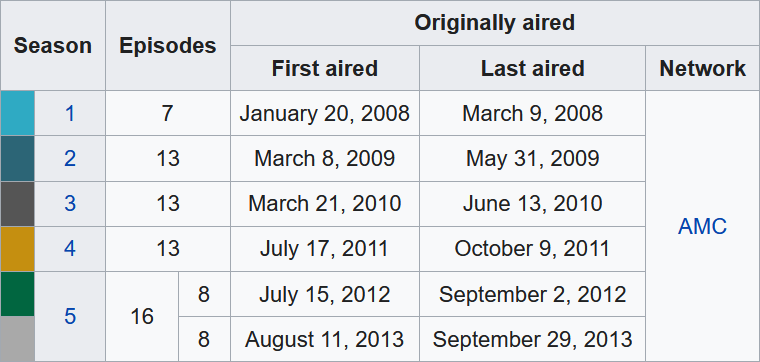

# Part (a)
sales <- c(30, 50, 40)
costs <- c(15, 15, 100)
# Part (b)
profits <- sales - costs
profits
## [1] 15 35 -60
# Part (c): No, I lost money!
sum(profits)
## [1] -10Day 1B

We continue after lunch with an introduction to more complex object types in R (i.e., vectors for storing collections of multiple objects, strings for storing text data, and tibbles for storing data sets), packages for adding new features to R, best practices for organizing data in spreadsheets, and importing/exporting data files into/from R.
Slides
Practice
Question 1.
Imagine that you ran a stand selling bananas for three days. On the first day, you sold $30 worth of bananas and spent $15 on supplies. On the second day, you sold $50 worth of bananas and spent $15 on supplies. On the third day, you sold $40 worth of bananas and spent $100 on repairs to the stand (due to an unfortunate fire).
Create two vectors named
salesandcoststo store how much you sold and how much you spent on each day, respectively.Subtract the
costsobject from thesalesobject and save the result to a new object namedprofits. Print this to see your profits per day.Use the
sum()function to calculate your total profits over all three days. Was your effort fruitful, i.e., did you make money overall?
Click here for the answer key
Question 2.
- Create a character vector named
flavorsthat contains the following strings and print it:- Cookies & Cream
- Americone Dream (R)
- Bob Marley’s 1 Love
- Use a function to calculate the number of strings in
flavors. - Use another function to calculate the number of characters in each string in
flavors. - Let R know how you feel about ice cream by using a function to either make all the characters in
flavorsuppercase (you LOVE ice cream) or lowercase (you don’t love ice cream).
Click here for the answer key
Answer (a)
flavors <- c("Cookies & Cream", "Americone Dream (R)", "Bob Marley's 1 Love") flavors #> [1] "Cookies & Cream" "Americone Dream (R)" "Bob Marley's 1 Love"Answer (b)
length(flavors) #> [1] 3Answer (c)
nchar(flavors) #> [1] 15 19 19Answer (d)
toupper(flavors) #> [1] "COOKIES & CREAM" "AMERICONE DREAM (R)" "BOB MARLEY'S 1 LOVE" tolower(flavors) #> [1] "cookies & cream" "americone dream (r)" "bob marley's 1 love"
Question 3.
The following table summarizes the season information for the eight seasons of AMC’s Breaking Bad show.
Tidy up this data and save it to a tibble. Decide for yourself how to handle season 5 (should it be a single observation or two?). For the first and last aired dates, just store the year as a number.
Save the tibble you created to a CSV file named “breaking_bad.csv”.

Click here for the answer key
Answer (a)
Version with one observation for the season five parts
library(tidyverse) season <- c(1, 2, 3, 4, 5) episodes <- c(7, 13, 13, 13, 16) first_air <- c(2008, 2009, 2010, 2011, 2012) last_air <- c(2008, 2009, 2010, 2011, 2013) network <- "AMC" breaking_bad <- tibble(season, episodes, first_air, last_air, network) breaking_bad# A tibble: 5 × 5 season episodes first_air last_air network <dbl> <dbl> <dbl> <dbl> <chr> 1 1 7 2008 2008 AMC 2 2 13 2009 2009 AMC 3 3 13 2010 2010 AMC 4 4 13 2011 2011 AMC 5 5 16 2012 2013 AMCVersion with two separate observations for the season five parts
library(tidyverse) season <- c(1, 2, 3, 4, 5.1, 5.2) episodes <- c(7, 13, 13, 13, 8, 8) first_air <- c(2008, 2009, 2010, 2011, 2012, 2013) last_air <- c(2008, 2009, 2010, 2011, 2012, 2013) network <- "AMC" breaking_bad <- tibble(season, episodes, first_air, last_air, network) breaking_bad# A tibble: 6 × 5 season episodes first_air last_air network <dbl> <dbl> <dbl> <dbl> <chr> 1 1 7 2008 2008 AMC 2 2 13 2009 2009 AMC 3 3 13 2010 2010 AMC 4 4 13 2011 2011 AMC 5 5.1 8 2012 2012 AMC 6 5.2 8 2013 2013 AMCAnswer (b)
write_csv(breaking_bad, "breaking_bad.csv")
Question 4.
Install the praise package. Then load the installed package in your Quarto document and experiment with the praise() function by running it several times with no arguments. What does the function seem to do?
Click here for the answer key
Answer
The function seems to create strings that praise/compliment the user.# install.packages("praise") library(praise) praise() ## [1] "You are marvelous!" praise() ## [1] "You are terrific!"
Readings
- “Section 2.2.1: The penguins data frame” from R4DS (2E)
- “Section 6.2: Tidy Data” from R4DS (2E)
- “Chapter 8: Data Import” from R4DS (2E)
- “Data organization in spreadsheets” in The American Statistician
- “Chapter 15: Strings in R4DS (2E)
Fun Stuff
“Who’s” on First?
A lesson about the importance of strings…
Fundamentals of Tidying
Marie doesn’t like formatting-as-data either…